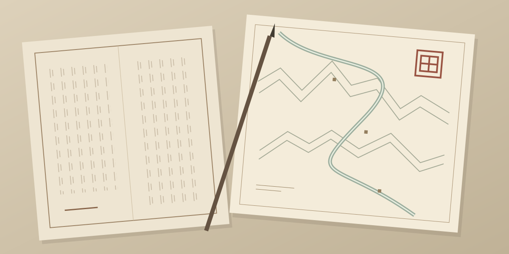

Late-Ming project · Longer-term direction
Ming
History before the world.
A future late-Ming project, beginning with the historical groundwork it needs. Sanguo3D’s technical architecture can support it; the history must be studied on its own terms.

01 · The project
History before the world.
Ming is a longer-term project set in the late Ming period. It can draw on Sanguo3D’s technical architecture, but changing the century means more than replacing names and costumes.
The historical groundwork is a substantial part of the project: places, people, institutions, economic life, military organisation, and the relationship between local accounts and broader narratives all need careful attention.
This page establishes a home for that future work. It does not announce a completed research collection, a playable game, or a fixed release date.
02 · Reading room
A reading room still to be assembled
Before a game world is assembled, its sources need to be organised. The initial research agenda includes:
- Chronology and geography. Establish when events occurred and how places, routes, and administrative boundaries relate.
- Institutions and daily life. Study administration, trade, settlement, and material culture alongside campaigns.
- Sources and interpretation. Record provenance, distinguish primary accounts from later scholarship, and make disagreements visible.
- From evidence to game design. Separate what is historically supported from what is simplified or imagined for play.
These are areas to prepare, not a list of finished studies. A curated bibliography and individual reading notes can be added here as sources are checked.
The research-table image is an editorial illustration made for this site. It is not a Ming document, an accurate historical map, or evidence of completed archival research.
03 · Workshop
Research first, shared technology later
The immediate focus remains the Three Kingdoms projects. Ming is a later direction, with research preceding substantial production work.
Reusing Sanguo3D’s architecture may make the technical side more manageable. It does not replace the independent historical preparation or determine the final gameplay and artwork.
04 · Ming
Downloads & availability
No public installer, test programme, or release date is listed for Ming. Its reading and research space will grow before this section becomes a distribution channel.
Public build
Ming is a longer-term project requiring substantial historical preparation. There is no installer or public testing programme listed here.
Not yet available